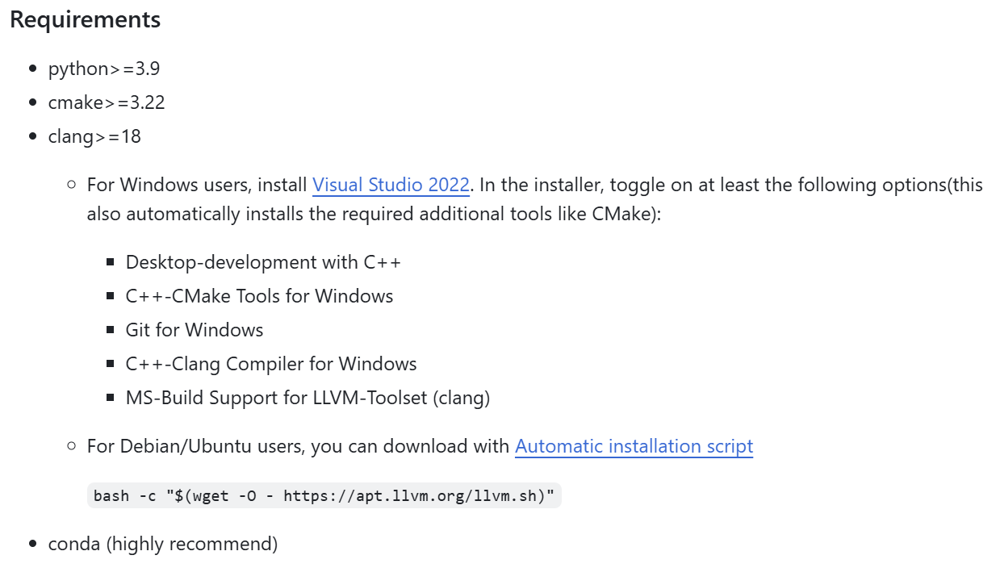
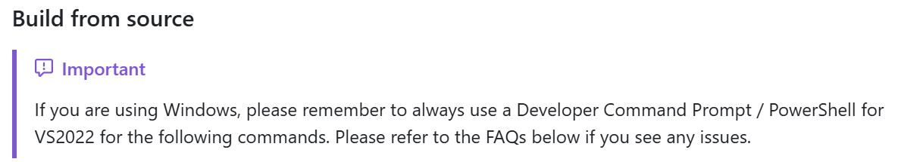
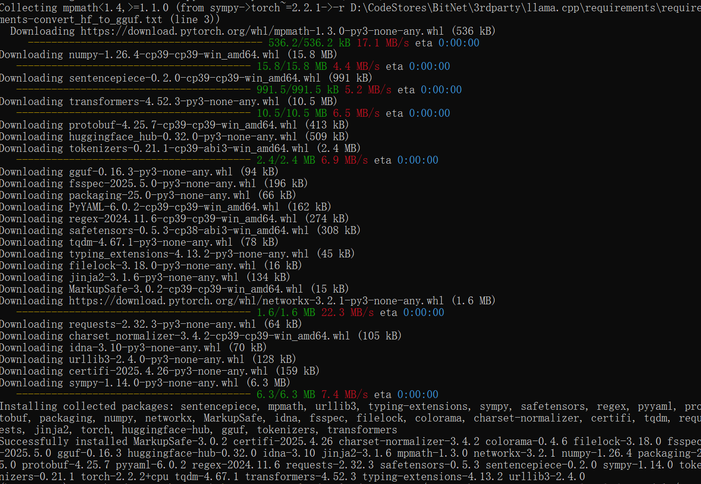
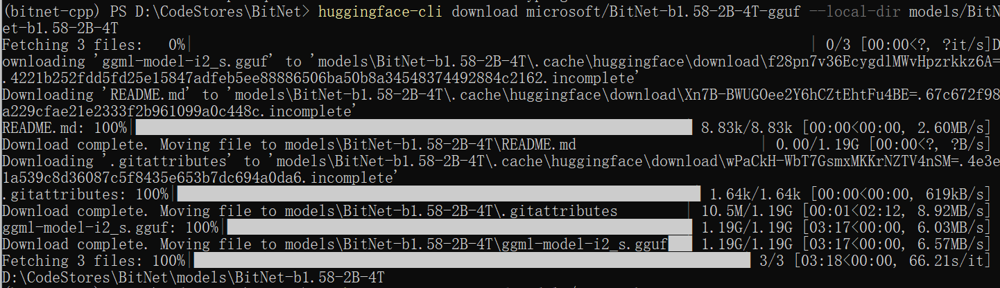
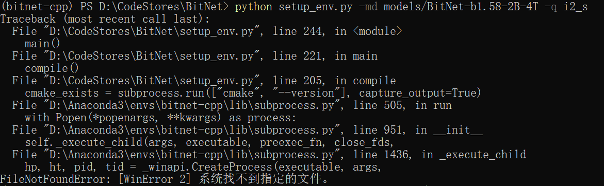
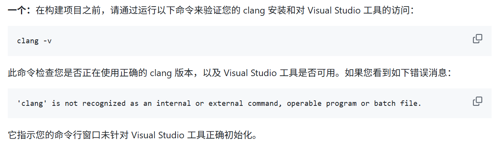

本地搭建BitNet
前言
近日，微软发布了一个全新的开源项目——BitNet.cpp，这是专为1-bit大语言模型（LLMs）推理而设计的框架。BitNet.cpp旨在通过优化内核为CPU上运行的1.58-bit模型提供快速且无损的推理支持，并在未来版本中计划支持NPU和GPU。
BitNet.cpp的开源为1-bit LLM的普及和大规模推理打开了新的大门，其在CPU上的高效推理性能，极大地扩展了大模型在本地设备上的可行性。未来，随着对NPU和GPU的支持，BitNet.cpp有望成为低比特模型推理的主流框架。如果你对大模型在实际应用中的推理性能感兴趣，BitNet.cpp无疑是值得关注和尝试的项目。
BitNet是微软近期推出的极限精简的推理框架，官方的介绍里，详细介绍了它的架构优势，以及和其他模型的对比实验，总结起来就是不挑设备，不占资源，不减性能！俩字儿牛x，仨字儿很牛x，四个字儿…
仓库地址：https://github.com/microsoft/BitNet
环境配置
C++环境配置
按照github中的步骤安装相应的C++环境
当C++相关环境配置完成后，后续的步骤，都需要在开发者的命令提示符或者PowerShell环境下进行，这点官方文档也给出了重点说明
BitNet库克隆
1 | git clone --recursive https://github.com/microsoft/BitNet.git |

Conda环境配置
根据步骤提示，创建Conda环境
1 | # (Recommended) Create a new conda environment |
安装依赖，直接按文档来即可
模型下载
github文档里介绍的方式是，通过huggingface-cli进行下载，需要科学上网才能正常下载的，大家到这如果进行不下去，可以试试直接到huggingface官网手动把模型下载下来，模型地址：https://huggingface.co/microsoft/bitnet-b1.58-2B-4T-gguf/tree/main。
使用huggingface-cli进行下载如下图所示：
模型编译
按照github文档说明执行
1 | python setup_env.py -md models/BitNet-b1.58-2B-4T -q i2_s |
这里需要注意的是克隆的bitnet库，那到编译这一步大概率是走不通的，首先是因为这点官方文档里也说明了，由于本项目上游的llama.cpp项目有几个文件存在bug，c++文件丢失了引用，所以我们需要手动的把这几个文件修复一下，官方也给了修复地址在这里：https://github.com/tinglou/llama.cpp/commit/4e3db1e3d78cc1bcd22bcb3af54bd2a4628dd323
这里我们就直接参照他的说明修改一下就行，不会c++也没问题，分别修复一下四个文件
1 | …\3rdparty\llama.cpp\common\common.cpp |
修复的内容是一样的，在头部添加一下引用即可
1 |
这样可以解决基本问题，但是我在运行时出现了以下报错
这个问题在github文档中也有提到
是因为无法在 Windows 的 conda 环境中使用 clang 进行构建导致的，根据文档中的提示进行修改，我使用的是PowerShell
1 | Import-Module "C:\Program Files\Microsoft Visual Studio\2022\Professional\Common7\Tools\Microsoft.VisualStudio.DevShell.dll" Enter-VsDevShell 3f0e31ad -SkipAutomaticLocation -DevCmdArguments "-arch=x64 -host_arch=x64" |
这里要注意目录文件中的 \Professional 要根据自己的Visual Studio版本进行修改，我的是Comuunity版本
同时这条命令可以分开执行，首先执行如下命令直接加载DevShell模块
1 | Import-Module "C:\Program Files\Microsoft Visual Studio\2022\Professional\Common7\Tools\Microsoft.VisualStudio.DevShell.dll" |

然后执行如下命令
1 | Enter-VsDevShell 3f0e31ad -SkipAutomaticLocation -DevCmdArguments "-arch=x64 -host_arch=x64" |
要注意，这里的 “3f0e31ad” 是 Instance ID，需要自己去查找，否则就会出现以下错误

查找过程非常简单，按照如下步骤即可：
首先安装VSSetup PowerShell模块
1 | Install-Module -Name VSSetup -Scope CurrentUser -Force |

安装后导入模块并查询
1 | Import-Module VSSetup |
然后根据获取的InstanceID修改命令，运行即可
1 | Enter-VsDevShell 6d25e4c3 -SkipAutomaticLocation -DevCmdArguments "-arch=x64 -host_arch=x64" |

输入如下命令，可以验证此时可以使用clang
1 | clang -v |

最后执行编译指令，就可以通过编译了，这里可能需要稍等一小会儿才会编译完成。

本地测试
经过漫长的环境配置之后，终于可以测试了，执行以下代码，启动对话窗口
1 | python run_inference.py -m models/BitNet-b1.58-2B-4T/ggml-model-i2_s.gguf -p "You are a helpful assistant" -cnv |
至此，我们就基本完成了本地部署BitNet的工作了，就像文章开头说过的，目前，本地跑的BitNet模型，并不是一个全精度模型，尺寸很小，所以可以流畅的运行在CPU环境下，且内存占用率极低，但实际测试大部分的对话它是理解错误的，也就是不是很可用，但这东西如果专门用来探索边缘计算的场景，经过调教之后，应该也能发挥很大的用处。